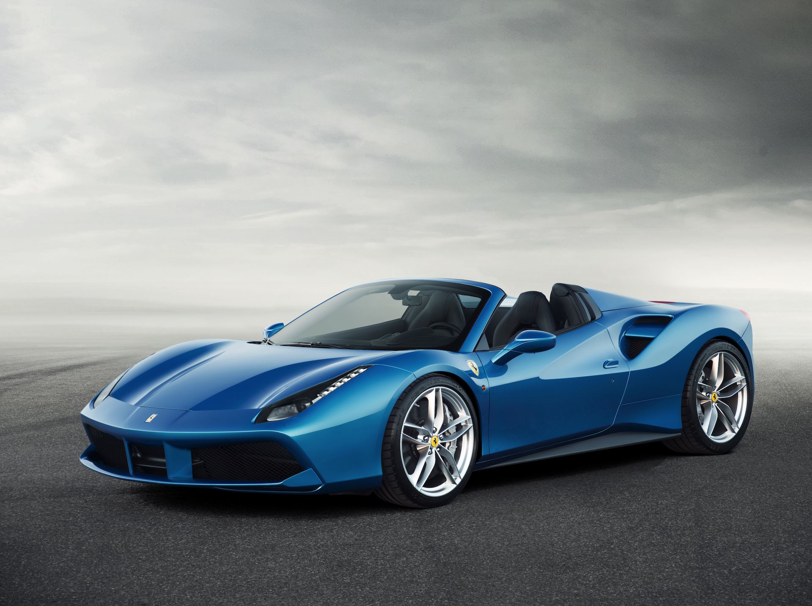
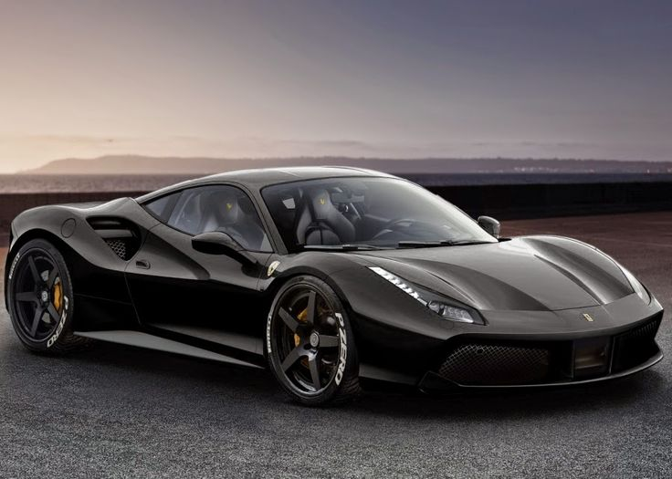

.jpg)
Ferrari 488GTB là một chiếc xe thể thao trung bình được sản xuất bởi nhà sản xuất xe thể thao Ý Ferrari , được giới thiệu vào năm 2015 để thay thế cho mẫu 458 trước. Nó được trang bị động cơ V8 tăng áp đôi 3.9 lít, nhỏ hơn và cao hơn động cơ hút 458. Chiếc 488 GTB được đặt tên là "Siêu xe của năm 2015" của tạp chí xe Top Gear , cũng như trở thành "Trình điều khiển xe tốt nhất" năm 2017 của Motor Trend.
Chiếc 488 GTB được trang bị động cơ 3902cc (mỗi bánh có công suất 488cc trên mỗi xi-lanh), tất cả là nhôm khô của gia đình động cơ Ferrari F154. Turbocharged với hai song song mang đôi turbine tăng áp cung cấp bởi IHI / Honeywell và hai không khí-to-air intercoolers , bánh xe máy nén được làm bằng hợp kim TiAl mật độ thấp thường được sử dụng trong máy bay phản lực để giảm quán tính và chống cao nhiệt độ bên trong turbine tăng áp. Động cơ sản xuất 670 PS (493 kW, 661 mã lực) ở vòng tua 8.000 vòng / phút và mô men xoắn 760 Nm (561 lb ft) ở 3000 vòng / phút. Kết quả này cho ra công suất riêng biệt là 126,3 kW (171,7 PS; 169,4 mã lực) trên mỗi lít và mô men xoắn đặc biệt là 194,8 Nm (144 lbf * ft) trên mỗi lít, cả hai đều ghi cho một chiếc xe Ferrari.
Phiên bản truyền thống duy nhất cho 488 là hộp số tự động 7 cấp tốc độ ly hợp 7 hộp số tự động được sản xuất cho Ferrari bởi Getrag , dựa trên hộp số được sử dụng trong 458.
Hệ thống phanh bằng carbon được cải tiến được cung cấp trên 488, lấy từ công nghệ được sử dụng trong LaFerrari , được chế tạo bằng vật liệu mới làm giảm thời gian cần thiết để đạt được nhiệt độ hoạt động tối ưu. Kích thước đĩa là 398 mm ở phía trước, và 360 mm ở phía sau. Những tiến bộ này làm giảm khoảng cách khoảng 9% so với năm 458. Một bánh xe hợp kim 5 chấu mới được thiết kế cho chiếc 488, cách mặt trước và sau 51 cm (20 inch). Lốp trước có kích thước 245/35 với vòng 305/30.
Hiệu suất của nhà sản xuất được yêu cầu cho GTB 488 là 0-100 km / h trong vòng 3.0 giây, 0-200 km / h trong 8,3 giây, bao trùm phần tư dặm trong 10,45 giây và tiếp tục một tốc độ tối đa trên 330 km / h (205 dặm / giờ).